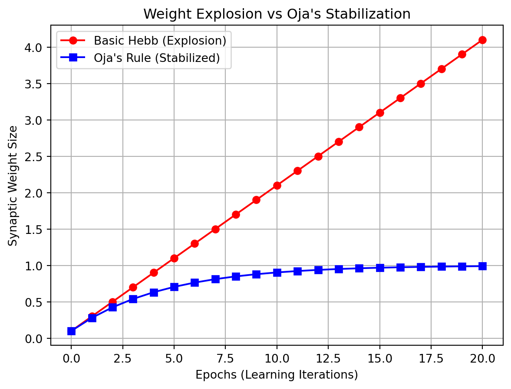
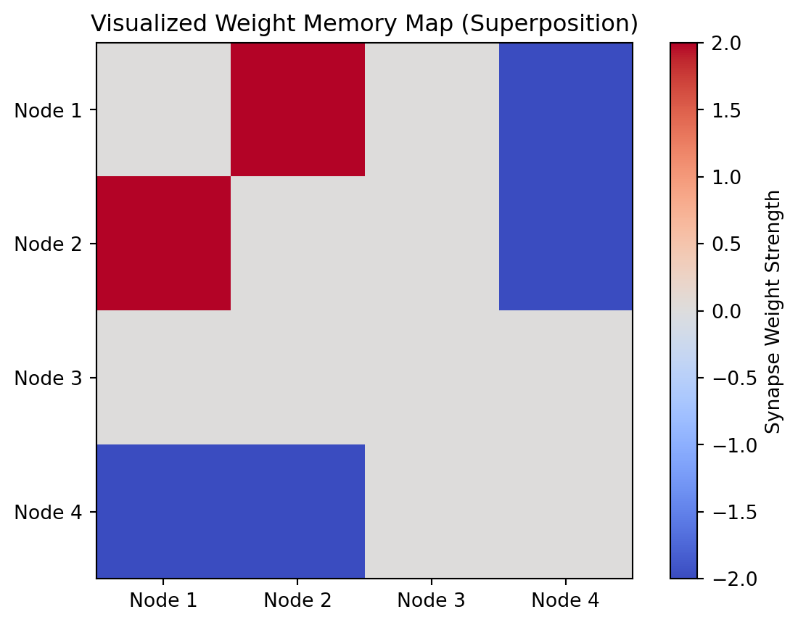

헵 규칙(Hebbian learning)의 생물학적/수학적 기전 이해: 두 뉴런의 동시 활성화가 시냅스 가중치를 어떻게 변화시키는지 파이썬 코드로 증명함.
차원의 팽창, 행렬 외적(outer product) 연산 체화: 수만 개의 시냅스 연결망을 한 번에 갱신하는 외적의 수학적 의미를 직관적으로 이해함.
연합기억과 패턴 완성의 인과관계 규명: 자가 연합기억 모델을 구축하고, 노이즈가 낀 힌트로부터 원본 기억이 복원(패턴 완성)되는 과정을 코딩함.
파국적 간섭(catastrophic interference)의 한계 인식: 직교성(orthogonality)이 없는 데이터가 신경망을 붕괴시키는 과정을 목격하고, 6주차 오차 역전파 학습의 도입 당위성을 깨달음.
[그림 1] 학습의 원리 #1: Hebb 규칙(Hebbian learning)과 연합기억
1부: 내적과 외적, 그리고 시냅스 학습의 수학적 구현
1.1. 내적(inner/dot product)과 외적(outer product)의 대조적 이해
이론적 설명
지난 4주차에서 다룬 내적과 5주차의 핵심인 외적은 인공신경망을 움직이는 두 개의 거대한 수레바퀴임.
내적은 차원을 수축하여 총합을 구하고, 외적은 차원을 팽창시켜 2차원 구조(행렬)를 창조하는 완전히 정반대의 연산임.
심화 해설:
내적: 입력 배열과 가중치 배열의 짝꿍 원소들을 각각 곱한 뒤 몽땅 더하여, 단 하나의 스칼라(숫자) 값을 도출함. 세포체에 쌓인 총 전기 신호량을 압축해서 뽑아낼 때 사용함.
외적
세로로 세운 출력 열 벡터와 가로로 눕힌 입력 행 벡터의 모든 교차점을 일일이 곱하여, 거대한 2차원 가중치 행렬(matrix)을 도출함.
가중치 맵(weight map): 수만 개의 뉴런들이 서로 얽혀 있는 시냅스의 굵기(연결 강도)를 마치 엑셀 표처럼 네모반듯하게 기록해둔 거대한 장부를 뜻함.
외적 연산은 이 수만 개의 시냅스 연결 강도를 단 한 번의 연산으로 단숨에 계산해 가중치 맵을 찍어낼 때 필수적으로 사용됨.
비유
내적: 마트 장바구니의 물건들(입력)과 가격표(가중치)를 짝지어 곱하고 몽땅 더해, 최종적으로 35,000원이라는 영수증 총액(단일 숫자)을 쥐여주는 결제 압축 과정임.
외적: 초등학교 때 배우는 ’구구단 표 만들기’와 같음. 가로축에 1~9를 깔고 세로축에 1~9를 세운 뒤, 두 축이 만나는 81개의 모든 교차 칸에 곱셈 결과를 쾅 찍어내어 거대한 9 x 9 표(행렬)를 단숨에 인쇄해내는 차원 팽창 마법임.
[그림 2] 수축과 팽창: 신경망을 구동하는 두 개의 수레바퀴
[실습 1-1] 파이썬을 통한 내적과 외적의 연산 및 형태 비교
Code
import numpy as np # 선형대수 고속 연산을 위한 numpy 라이브러리를 np 약칭으로 임포트함# 1. 1차원 벡터 준비 (크기가 3인 배열)x_vec = np.array([1, 2, 3]) # 입력값 역할을 할 1차원 배열(크기 3)을 생성하여 x_vec 변수에 할당함w_vec = np.array([0.5, 0.5, 0.5]) # 가중치 역할을 할 1차원 배열(크기 3)을 생성하여 w_vec 변수에 할당함# 2. 내적(Inner Product) 연산: 차원의 수축# (1*0.5) + (2*0.5) + (3*0.5) = 0.5 + 1.0 + 1.5 = 3.0inner_result = np.dot(x_vec, w_vec) # 같은 위치의 원소끼리 짝지어 곱하고 모두 더한 단일 스칼라 값을 계산함print("=== [실습 1-1] 내적 연산 (결제 영수증) ===") # 실습 결과를 구분하는 헤더 출력print(f"내적 결과: {inner_result} (모든 차원이 붕괴되어 단일 숫자 스칼라로 수축됨)") # 계산된 스칼라 값을 포맷팅하여 출력# 3. 외적(Outer Product) 연산: 차원의 팽창# np.outer()는 첫 번째 인자를 세로로, 두 번째 인자를 가로로 교차하여 모든 쌍을 곱함.outer_result = np.outer(x_vec, w_vec) # x_vec을 열(세로)로, w_vec을 행(가로)으로 취급하여 1:1로 교차 곱한 3x3 행렬을 반환함print("\n=== [실습 1-1] 외적 연산 (구구단 표 인쇄) ===") # 줄바꿈과 함께 외적 결과 헤더 출력print(f"외적 결과:\n{outer_result}") # 3x3 행렬 구조로 팽창된 배열을 화면에 출력print("-> 해설: 1차원 배열 2개가 만나 3x3 크기의 거대한 2차원 가중치 행렬(맵)로 차원이 팽창함!") # 외적의 기하학적 의미 해설
=== [실습 1-1] 내적 연산 (결제 영수증) ===
내적 결과: 3.0 (모든 차원이 붕괴되어 단일 숫자 스칼라로 수축됨)
=== [실습 1-1] 외적 연산 (구구단 표 인쇄) ===
외적 결과:
[[0.5 0.5 0.5]
[1. 1. 1. ]
[1.5 1.5 1.5]]
-> 해설: 1차원 배열 2개가 만나 3x3 크기의 거대한 2차원 가중치 행렬(맵)로 차원이 팽창함!
1.2. 도널드 헵의 학습 가설과 시냅스
이론적 설명
1949년 도널드 헵(Donald Hebb)은 “두 뉴런이 동시에 활성화될 때, 둘 사이의 연결 강도(시냅스)가 증가한다(Cells that fire together, wire together)”는 가설을 제안함. 이는 뇌가 외부 자극 패턴을 물리적인 연결구조로 각인시키는 비지도 학습의 기초임.
수식: \(\Delta w = \eta \cdot x \cdot y\)
심화 해설
헵 규칙은 뇌의 양 끝에 멀리 떨어져 아무런 물리적 접점이 없는 두 뉴런에 텔레파시처럼 적용되는 것이 아님. 반드시 물리적으로 ’축삭돌기’와 ’수상돌기’가 미세한 틈(시냅스)을 두고 연접해 있는 두 뉴런 사이에서 일어나는 국소적 현상임.
앞선 뉴런이 신경전달 물질을 뿌리고(활성화), 뒷 뉴런이 그것을 받아 곧바로 흥분(활성화)하면, 그 시냅스 틈새에 수용체가 급증하며 단백질 구조가 변함. \(\Rightarrow\) 두 뉴런 사이를 잇는 ’물리적 파이프라인’이 실제로 굵어지는 생물학적 기전임.
비유: 눈 덮인 들판(뇌)에 처음 두 마을(뉴런) 사이를 걸어갈 때는 눈이 쌓여 있어(약한 연결) 힘들지만, 두 마을을 잇는 산책로를 자주 왕복하며 발자국을 남기게 되면 점차 눈이 다져지면서 단단하고 넓은 물리적인 길(시냅스 두께 증가)이 영구적으로 닦이는 현상과 같음.
[그림 3] 생물학적 각인: 헵 규칙에 의한 파이프라인 팽창
[실습 1-2] 단일 시냅스의 헵 규칙 학습 코딩
Code
# 1. 시냅스 초기 상태 및 하이퍼파라미터 세팅w =0.2# 맞닿아 있는 두 뉴런을 잇는 시냅스 파이프의 초기 두께(가중치)를 0.2로 얕게 세팅함learning_rate =0.1# 한 번의 동시 활성화 경험당 파이프 두께를 얼마나 크게 늘릴지 결정하는 학습률(보폭)print(f"[학습 전] 초기 시냅스 가중치(파이프 두께): {w:.2f}") # 학습 전의 베이스라인 가중치 출력# 2. 첫 번째 경험 (Fire together: 동시 활성화)x1 =1.0# 앞쪽 뉴런(입력)이 강하게 전기 신호를 뿜어낸(fire) 켜짐 상태(1.0)y1 =1.0# 뒤쪽 뉴런(출력)도 연이어 강하게 전기 신호를 뿜어낸(fire) 켜짐 상태(1.0)delta_w1 = learning_rate * x1 * y1 # 헵 규칙 공식(학습률 * 입력값 * 출력값)으로 파이프 두께 변화량을 계산함w = w + delta_w1 # 기존 파이프 두께(w)에 변화량(delta_w1)을 덧셈 누적하여 시냅스를 업데이트함print(f"[1회차 학습] 두 뉴런 동시 활성화 -> 파이프 두께 증가량: +{delta_w1:.2f} | 업데이트된 가중치: {w:.2f}") # 동시 활성화로 인해 가중치가 증가한 결과 출력# 3. 두 번째 경험 (Fire independently: 단독 활성화)x2 =1.0# 앞쪽 뉴런만 전기 신호를 뿜어냄 (켜짐)y2 =0.0# 뒤쪽 뉴런은 반응하지 않고 침묵함 (동시 활성화 실패)delta_w2 = learning_rate * x2 * y2 # y2가 0이므로 변화량 연산 결과가 0이 되어 파이프 두께가 늘어나지 않음w = w + delta_w2 # 기존 가중치에 0을 더하므로 이전 상태를 그대로 유지함print(f"[2회차 학습] 한 뉴런만 활성화 -> 파이프 두께 증가량: +{delta_w2:.2f} | 업데이트된 가중치: {w:.2f}") # 한쪽만 켜졌을 땐 가중치가 변하지 않음을 증명하여 출력
[학습 전] 초기 시냅스 가중치(파이프 두께): 0.20
[1회차 학습] 두 뉴런 동시 활성화 -> 파이프 두께 증가량: +0.10 | 업데이트된 가중치: 0.30
[2회차 학습] 한 뉴런만 활성화 -> 파이프 두께 증가량: +0.00 | 업데이트된 가중치: 0.30
1.3. 수만 개의 가중치와 외적을 통한 동시 학습
이론적 설명
우리 뇌에는 뉴런이 860억 개가 넘고, 이들이 거미줄처럼 얽혀 있음.
가중치(weight): 뉴런과 뉴런 사이를 이어주는 시냅스 파이프의 굵기(신호 전달률)를 컴퓨터 숫자로 표현한 것.
심화 해설
가중치 맵의 거대한 규모: 앞서 언급했듯, 가중치 맵(weight matrix)은 이 수많은 시냅스 파이프의 굵기들을 엑셀 표처럼 기록해 둔 장부임. 만약 입력층 뉴런이 1만 개, 출력층 뉴런이 1만 개라면 이들을 모두 잇는 시냅스 파이프는 무려 1억 개(10,000 x 10,000)가 필요함.
외적 연산의 유용성: 헵 규칙을 적용할 때 파이썬 for 문으로 이 1억 개를 하나하나 계산하면 컴퓨터가 다운되지만, 외적 연산을 사용하면 (1만 x 1만) 크기의 가중치 변화량 맵을 단 한 줄의 코드로 0.1초 만에 일괄 갱신할 수 있음.
공식: \(\Delta W = \eta \cdot (Y \otimes X)\)
비유
100명의 심사위원(입력 뉴런)이 100명의 오디션 참가자(출력 뉴런)와 단체 미팅을 함. 한 명씩 불러서 서로의 호감도(가중치)를 묻고 적으려면 10,000번의 면담(for문)이 필요함.
하지만 ’외적’이라는 마법의 도장을 찍으면, 가로축 심사위원과 세로축 참가자가 만나는 10,000칸짜리 거대한 ’교차 호감도 채점표(가중치 맵)’가 1초 만에 한 방에 인쇄되어 나옴.
[그림 4] 차원의 마법: 1억 번의 개별 연산 vs 단숨의 일괄 인쇄
[실습 1-3] 외적을 활용한 가중치 행렬 맵 일괄 업데이트
Code
# 1. 3개의 입력 뉴런과 3개의 출력 뉴런 세팅(총 9개의 파이프가 얽혀 있음)x_pattern = np.array([1, 0, 1]) # 3개의 입력 뉴런 중 1번, 3번만 켜진 자극 상태 배열y_pattern = np.array([1, 1, 0]) # 3개의 출력 뉴런 중 1번, 2번만 켜진 반응 상태 배열# 2. 초기 3x3 가중치 맵(장부) 준비W_network = np.zeros((3, 3)) # 9개의 파이프 굵기가 모두 0으로 텅 비어 있는 3 x 3 영행렬(빈 장부)을 생성함# 3. 헵 규칙과 외적을 통한 9개 파이프 동시 공사learning_rate =0.5# 다중 뉴런 학습용 보폭(학습률)# np.outer로 출력 벡터와 입력 벡터를 교차 곱하여 9개 위치의 가중치 변화량 행렬을 단 한 번에 도출함delta_W = learning_rate * np.outer(y_pattern, x_pattern) W_network += delta_W # 텅 비어 있던 기존 3x3 장부에 9개의 변화량 맵을 통째로 덧셈 갱신(업데이트)함print("=== [실습 1-3] 외적을 통한 거미줄 가중치 맵 동시 각인 ===") # 다중 뉴런 동시 업데이트 결과 헤더print(f"업데이트된 가중치 맵(표):\n{W_network}") # 9개의 시냅스가 일괄 수정된 3x3 행렬 출력print("-> 해설: 입력도 켜지고(1), 출력도 켜진(1) 교차점인 (1행1열, 1행3열, 2행1열, 2행3열) 파이프만 정확히 0.5로 두꺼워짐!") # 외적의 원리가 행렬 내에서 어떻게 교차 갱신되었는지 해설
설명: 순수한 헵 규칙 공식(\(\Delta w = \eta x y\))은 브레이크가 없어, 두 뉴런이 켜질 때마다 가중치 숫자가 무한대로 폭발하는(weight explosion) 치명적 버그가 있음. 이를 막기 위해 헵 규칙에 망각항(\(-yw\))을 추가한 것이 오자 규칙임.
수식: \(\Delta w = \eta y (x - y w)\)
심화 해설
망각항의 수학적 의미와 주성분 분석: 수식 괄호 안의 빼기 부분, 즉 망각항(\(-yw\))이 바로 폭주를 제어하는 브레이크 역할을 함. 파이프가 굵어질수록(\(w\)가 커질수록) 빼주는 감쇠값도 같이 커져, 결국 특정 한계치(1.0)에 수렴하도록 시스템을 자동 강제함.
PCA와의 관련성: 이 수학적 견제 장치는 통계학의 주성분 분석(principal component analysis, PCA)과 동일한 연산 결과를 냄. \(\Rightarrow\) 어지러운 수만 개의 데이터 자극 속에서 신경망이 멍청하게 모든 것을 다 기억하는 것이 아니라, 정보량이 가장 풍부한 핵심 뼈대 특징(제1 주성분) 단 하나만을 스스로 찾아내어 그 파이프에만 에너지를 집중시키는 고도의 데이터 압축 튜닝을 기계가 알아서 해낸다는 뜻.
비유: 근육(가중치)을 키울 때 단백질을 먹는 족족 근육이 헐크처럼 무한대로 커지지 않음. 근육 덩치가 커질수록 가만히 있어도 갉아먹는 기초 대사량(망각항: \(-yw\))도 같이 커지기 때문에, 결국 내 식사량과 대사량이 팽팽하게 줄다리기를 하다 어느 ’적정 근육량(1.0)’에 도달하면 성장이 딱 멈추는 생물학적 항상성(homeostasis)의 원리와 같음.
[그림 5] 폭주와 제어: 망각항이 빚어내는 항상성(Oja’s rule)
[실습 1-4] 오자 규칙을 통한 시스템 안정화 시뮬레이션
Code
import matplotlib.pyplot as plt # 반복 학습에 따른 가중치 변화(팽창/수렴)를 꺾은선 그래프로 그리기 위해 임포트함w_hebb =0.1# 끝없이 폭발할 순수 헵 규칙의 초기 가중치(0.1)를 세팅함w_oja =0.1# 브레이크가 달린 오자 규칙의 초기 가중치(0.1)를 동일하게 세팅함learning_rate =0.2# 두 모델 모두에 공평하게 적용할 학습률을 0.2로 설정함epochs =20# 두 뉴런이 동시 활성화되는 동일한 자극 경험을 20회 반복 주입함history_hebb = [w_hebb] # 반복할 때마다 변하는 헵 규칙의 가중치 팽창 기록을 저장할 빈 리스트 생성history_oja = [w_oja] # 반복할 때마다 변하는 오자 규칙의 가중치 수렴 기록을 저장할 빈 리스트 생성for i inrange(epochs): # 20번의 에포크(경험)를 반복하는 for 루프 시작 x, y =1.0, 1.0# 20번 내내 두 뉴런이 1.0으로 동시 활성화되는 가혹한 켜짐 조건 주입# 1. 기본 헵 규칙(브레이크 없음) w_hebb += learning_rate * x * y # 순수 헵 규칙 변화량을 기존 가중치에 덧셈 누적하여 팽창시킴 history_hebb.append(w_hebb) # 팽창한 수치를 히스토리 리스트에 추가함# 2. 오자 규칙(망각항 제동 장치 장착) delta_w_oja = learning_rate * y * (x - y * w_oja) # 오자 공식: 괄호 안의 감쇠항(-y*w)이 현재 가중치 크기에 비례하여 변화량을 깎아내림 w_oja += delta_w_oja # 감쇠되어 계산된 안전한 변화량을 오자 가중치에 덧셈 업데이트함 history_oja.append(w_oja) # 수렴해가는 수치를 히스토리 리스트에 추가함# 폭발하는 그래프와 안정화되는 그래프의 시각적 비교plt.plot(history_hebb, marker='o', color='red', label='Basic Hebb (Explosion)') # 순수 헵 규칙의 궤적을 붉은색 선과 원형 마커로 그림plt.plot(history_oja, marker='s', color='blue', label="Oja's Rule (Stabilized)") # 오자 규칙의 궤적을 푸른색 선과 사각형 마커로 겹쳐서 그림plt.title("Weight Explosion vs Oja's Stabilization") # 그래프 상단에 두 방식의 비교를 알리는 영문 제목을 달아줌plt.xlabel("Epochs (Learning Iterations)") # X축이 누적된 반복 학습 횟수임을 설명하는 라벨plt.ylabel("Synaptic Weight Size") # Y축이 커지거나 안정화되는 시냅스 가중치의 크기임을 설명하는 라벨plt.legend() # 빨간선과 파란선이 각각 무엇을 의미하는지 우측 상단에 범례 표지판을 띄움plt.grid(True) # 눈대중으로 수치를 읽기 편하도록 그래프 배경에 희미한 격자 무늬를 켬plt.show() # 모든 그리기 설정이 끝난 캔버스를 최종적으로 화면에 렌더링하여 보여줌

[그림 6] 1부 요약: 거대한 신경망 인프라의 완성
2부: 연합기억, 패턴 완성 그리고 파국적 간섭
2.1. 필수 개념 정의: 패턴(pattern)과 연합(association)
패턴의 정의: 사과를 인식할 때 뇌 속의 뉴런 1만 개 중 어느 번호의 뉴런이 불이 켜지고(+1) 꺼졌는지(-1)를 나타내는 고유한 이진수 배열(vector)임. 예: [빨강 켜짐, 둥글다 켜짐, 단맛 켜짐, 짠맛 꺼짐]\(\rightarrow\)[1, 1, 1, -1]. 이 숫자들의 조명 패턴 자체가 하나의 개념(사과)을 표상함.
연합의 정의: 불이 켜진 특정 뉴런들(예: 빨강 뉴런과 둥글다 뉴런) 사이의 시냅스 파이프(가중치)를 두껍게 만들어, 이들을 하나의 거대한 운명 공동체로 꽁꽁 묶어버리는 접착 행위임.
2.2. 인과관계 규명: 연합기억(원인)과 패턴 완성(결과)
이론적 설명: 교재에 자주 혼용되는 ’연합기억(aAssociative memory)’과 ’패턴 완성(pattern completion)’은 동의어가 아님. 연합기억은 정보를 물리적으로 결속시키는 원인 메커니즘이며, 패턴 완성은 그 구축된 인프라로 인해 발생하는 소프트웨어적 인출 결과 현상임.
심화 해설:
원인(연합기억)
사과를 처음 경험할 때, 뇌에서는 사과의 특성인 ‘빨갛다’, ‘둥글다’, ’달콤하다’를 담당하는 뉴런들이 동시에 불을 켬.
헵 규칙(동시 활성화)에 의해 이 켜진 뉴런들 사이를 연결하는 다리(가중치)가 점점 굵고 단단해짐.
이렇게 여러 특징들이 서로 끈끈하게 엮여 하나의 거대한 ’사과 개념 덩어리’로 결속되는 물리적인 공사 과정 자체가 바로 연합기억(저장)임.
결과(패턴 완성): 훗날 도로가 깔린 뇌에 ‘빨갛다’라는 단서 노드 하나에만 불이 들어와도, 미리 뚫어놓은 아스팔트 도로망(가중치)을 타고 전기 신호가 쏟아져 들어가 ’둥글다’, ‘단맛’ 노드까지 강제로 연쇄 폭발을 일으켜 원본 패턴을 재생하는 인출 현상임.
비유: 연합기억은 벨크로(찍찍이)의 수많은 갈고리와 실을 꽉 맞물리게 꾹 눌러 붙이는 끈끈한 물리적 접착 행위(원인)임. 패턴 완성은 훗날 그 찍찍이의 한쪽 모서리(단서)만 잡고 들어 올려도, 꽉 맞물려 있는 가중치 구조 때문에 나머지 거대한 천 전체가 통째로 허공으로 딸려 올라오는 복원 현상(결과)임.
[그림 7] 원인과 결과: 연합기억(저장)과 패턴 완성(인출)
2.3. 자가 연합기억(auto-association) 모델
이론적 설명
자가 연합: 외부의 정답(출력 \(Y\))(예: “이것은 사과다”라는 정답 레이블)과 입력값을 매칭하는 것이 아님. 입력된 정보(\(X\)) 그 자체를 구성하는 내부 특징들(예: 사과의 ‘빨간색’, ‘둥근 모양’, ‘꼭지’)끼리 서로 끈끈하게 손을 꽉 맞잡도록 내부 결속력을 다지는 특수한 연합기억 학습 방식임.
홉필드 네트워크(Hopfield network): 물리학자 존 홉필드가 고안. 힌트만으로 전체를 찾아내는 연합기억 모델의 핵심 기초가 됨.
심화 해설
입력 벡터 \(X\)를 ’자기 자신’과 외적하여 가중치 맵 장부에 각인함.
공식: \(W_{Memory} = X \otimes X\)
예
[1(빨강), 1(둥글다)]를 스스로 외적하면 1번 뉴런과 2번 뉴런의 교차점이 커짐. 즉 “1번(빨강)과 2번(둥글다)은 항상 세트로 같이 다니는 애들”이라는 상관관계 정보가 가중치 표에 영구 기록되는 것임.
특히 양극성 데이터(+1, -1)를 쓰면 켜진 것(+)끼리도 뭉치지만, 꺼진 것(-)끼리도 서로를 강하게 억제하여 패턴을 돌덩이처럼 견고하게 만듦.
비유
일반적 연합: “사과(입력)”를 보면 “맛있다(출력)”라는 남을 떠올리게 외나무다리를 잇는 것.
자가 연합: 사과 내부의 “빨간색”, “둥근 모양”, “아삭함”이라는 속성들끼리 서로서로 쇠사슬을 꽁꽁 묶어 절대 흩어지지 않는 강력한 한 개의 ‘바위’ 덩어리로 응집시키는 과정임.
[그림 8] 운명 공동체: 자가 연합 기억과 대각선의 침묵
[실습 2-1] 원인 메커니즘: 자가 연합기억의 각인(저장)
Code
# 1. 뇌에 각인시킬 완벽한 원본 패턴 A 생성 (사과의 특징 패턴)pattern_A = np.array([1, 1, -1, -1]) # 사과를 특정하는 4개의 특징 요소를 양극성(-1, 1) 이진 배열(벡터)로 생성하여 변수에 할당함# 2. 4 x 4 크기의 빈 가중치 장부(맵) 준비W_Memory = np.zeros((4, 4)) # 4개의 특징 뉴런들이 교차로 얽힐 수 있도록 4 x 4 크기의 영행렬(빈 아스팔트 도화지)을 생성함# 3. 자기 자신과의 외적을 통해 뇌에 패턴을 쇠사슬로 묶어 아스팔트 포장(각인)함W_Memory += np.outer(pattern_A, pattern_A) # 패턴 A를 스스로와 교차 곱(외적) 연산하여, 그 결과물인 4 x 4 관계망을 기존 기억 맵(W_Memory)에 덧셈(+=)으로 영구 각인함# [중요] 자기 자신에게 돌아오는 재귀 시냅스(대각선 위치)는 무한 루프 증폭을 막기 위해 강제로 0으로 비워둠np.fill_diagonal(W_Memory, 0) # 넘파이의 대각선 조작 함수를 써서 정방행렬의 대각선 원소들(i=j)만 깔끔하게 0으로 초기화하여 신경망의 발작을 막음print("=== [실습 2-1] 자가 연합을 통한 단일 기억의 접착(원인) ===") # 1번 패턴 저장이 완료되었음을 알리는 출력print(f"패턴 A 내부 요소들끼리 끈끈하게 각인된 가중치 도로망:\n{W_Memory}") # 사과를 구성하는 4개 노드 간의 호감도(가중치)가 어떻게 세팅되었는지 행렬 형태로 화면에 보여줌
=== [실습 2-1] 자가 연합을 통한 단일 기억의 접착(원인) ===
패턴 A 내부 요소들끼리 끈끈하게 각인된 가중치 도로망:
[[ 0. 1. -1. -1.]
[ 1. 0. -1. -1.]
[-1. -1. 0. 1.]
[-1. -1. 1. 0.]]
2.4. 다중 패턴의 중첩(superposition) 저장과 시각화
이론적 설명: 인공신경망은 새로운 정보를 저장할 때 하드디스크처럼 방이나 폴더를 새로 만들지 않음. 오직 단 한 장의 거대한 가중치 행렬 도화지 안에 여러 패턴을 동시에 겹쳐 씀.
심화 해설
서로 다른 패턴들의 외적 결과(행렬)들을 따로 보관하지 않고, 기존 가중치 숫자들 위에 그냥 산술적으로 계속 덧셈(+)해버림.
겉보기엔 숫자들이 뒤엉켜 엉망진창인 것처럼 보이지만, 수학적으로 이 행렬 안에는 여러 패턴의 정보가 모두 파괴되지 않고 중첩(superposition)되어 살아 숨쉬고 있음.
비유: 얇고 투명한 셀로판지 한 장에 서로 다른 밑그림 무늬를 계속 겹쳐 그리는 것과 같음. 겹칠수록 선과 색이 섞여 까맣게 보이지만, 특정한 빛(힌트)을 비추면 숨어 있던 무늬 중 하나가 튀어나옴.
[그림 9] 숫자의 바다: 단 한 장의 도화지에 이뤄지는 중첩
[실습 2-2] 두 번째 패턴을 동일한 단일 행렬에 중첩(덧셈) 저장하기
Code
# 1-1. 사과와 특징이 일정 정도 겹치는 새로운 패턴(토마토) 생성pattern_Tomato = np.array([1, 1, 1, -1]) # 패턴 A(사과)와 수학적으로 부호가 일부 겹치는 패턴 토마토 배열을 생성함# 1-2. 사과와 완전히 다른 새로운 패턴 B(바나나) 생성pattern_B = np.array([1, -1, 1, -1]) # 패턴 A(사과)와 수학적으로 부호가 완전히 반대인 패턴 B(바나나) 배열을 생성함# 2-1. 패턴 토마토의 외적 행렬 계산W_Tomato = np.outer(pattern_Tomato, pattern_Tomato) # 패턴 토마토 내부의 노드들끼리 서로 손을 잡게 만드는 토마토 전용 가중치 맵을 외적으로 계산함# 2-2. 패턴 B(바나나)의 외적 행렬 계산 W_pattern_B = np.outer(pattern_B, pattern_B) # 패턴 B 내부의 노드들끼리 서로 손을 잡게 만드는 바나나 전용 가중치 맵을 외적으로 계산함# 3-1. 기존 사과(W_A) 기억에 토마토 기억을 겹쳐 씀(중첩)W_Interference = W_Memory + W_Tomato # 방이나 폴더를 새로 파지 않고, 이미 사과 데이터를 간직한 W_Memory 맵 위에 토마토 맵 숫자를 그대로 덧셈(+)해버림# 3-2. 기존 W_Memory 행렬 한 장에 패턴 B를 덧셈으로 그대로 겹쳐 씀(중첩)W_Memory += W_pattern_B # 방이나 폴더를 새로 파지 않고, 이미 사과 데이터를 간직한 W_Memory 맵 위에 바나나 맵 숫자를 그대로 덧셈(+)해버림# 4. 중첩된 가중치 맵을 대상으로 대각선 성분을 0으로 초기화np.fill_diagonal(W_Interference, 0) # '최종 신경망'이 구성된 시점에 무한 증폭을 막기 위해 대각선 원소는 0으로 밀어버림np.fill_diagonal(W_Memory, 0) # '최종 신경망'이 구성된 시점에 무한 증폭을 막기 위해 대각선 원소는 0으로 밀어버림print("=== [실습 2-2] 다중 패턴의 중첩(Superposition) 저장 ===") # 중첩 저장 완료를 알리는 헤더 출력print(f"사과와 토마토 기억이 한 공간에 숫자로 섞여 공존하는 메모리 맵:\n{W_Interference}") # 사과와 토마토의 기억 흔적이 하나의 4 x 4 행렬 덩어리 안에 어떻게 뒤엉켜 있는지 화면에 보여줌print(f"사과와 바나나 기억이 한 공간에 숫자로 섞여 공존하는 메모리 맵:\n{W_Memory}") # 사과와 바나나의 기억 흔적이 하나의 4 x 4 행렬 덩어리 안에 어떻게 뒤엉켜 있는지 화면에 보여줌
=== [실습 2-2] 다중 패턴의 중첩(Superposition) 저장 ===
사과와 토마토 기억이 한 공간에 숫자로 섞여 공존하는 메모리 맵:
[[ 0. 2. 0. -2.]
[ 2. 0. 0. -2.]
[ 0. 0. 0. 0.]
[-2. -2. 0. 0.]]
사과와 바나나 기억이 한 공간에 숫자로 섞여 공존하는 메모리 맵:
[[ 0. 0. 0. -2.]
[ 0. 0. -2. 0.]
[ 0. -2. 0. 0.]
[-2. 0. 0. 0.]]
[실습 2-3] 가중치 메모리 맵의 시각적 확인(heatmap)
기호주의의 서랍과 달리 연결주의의 기억은 ’수치의 패턴’으로 넓게 분포함. 이 뒤엉킨 숫자의 바다를 히트맵(heatmap) 색상으로 시각화하여 확인해봄.
히트맵 설명: 특징이 겹치는 곳은 \(+2\)로 폭주하고, 충돌하는 곳은 \(0\)으로 기억이 소실(상쇄)되어버림. 이처럼 단순 덧셈은 시스템을 붕괴시킬 수 있음.
Code
import matplotlib.pyplot as plt # 행렬을 이미지 색상으로 그려주는 시각화 패키지 임포트plt.imshow(W_Interference, cmap='coolwarm', interpolation='nearest') # W_Interference의 숫자들을 'coolwarm(파랑-빨강)' 색상표에 매핑하여 체스판 모양의 이미지로 변환함plt.title("Visualized Weight Memory Map (Superposition)") # 그려진 히트맵 그림 상단에 다중 패턴이 중첩되었다는 영문 제목을 덧붙임plt.colorbar(label='Synapse Weight Strength') # 그림 우측에 색깔의 진하기가 어떤 가중치 수치를 의미하는지 알려주는 컬러바 막대를 띄움plt.xticks(range(4), ['Node 1', 'Node 2', 'Node 3', 'Node 4']) # X축의 눈금(0, 1, 2, 3)을 사람이 읽기 편하게 뉴런 노드 번호로 이름표를 바꿔줌plt.yticks(range(4), ['Node 1', 'Node 2', 'Node 3', 'Node 4']) # Y축 눈금에도 동일하게 뉴런 노드 번호 이름표를 달아줌plt.show() # 파이썬 메모리에 그려둔 색상 매핑 체스판(히트맵)을 최종적으로 화면에 출력하여 보여줌

2.5. 노이즈 복구와 패턴 완성(pattern completion)
이론적 설명: 노이즈가 심하게 끼어 있거나 일부가 누락된 불완전한 힌트(단서)가 입력되었을 때, 이 찌그러진 데이터가 저장된 가중치 도로망을 통과하면서 수치적 지지를 받아 원래의 온전한 형태 패턴으로 스스로 복구되는 인출 메커니즘임.
심화 해설(부호 함수의 노이즈 필터링):
원시 시그널: 손상된 힌트 배열을 가중치 행렬과 내적(곱셈)하면, 그 결괏값은 활성화 에너지의 총합임. 따라서 \(+3.2\), \(-1.5\), \(+0.8\)처럼 애매하고 지저분한 실수 수치들로 도출됨.
부호 함수(sign function): 이때 부호 함수라는 활성화 함수를 마지막에 통과시킴. 이 함수는 \(x > 0\) 이면 무조건 \(1\)을, \(x < 0\) 이면 무조건 \(-1\)을 강제 반환함.
노이즈 복구: \(+0.8\)처럼 애매하게 묻은 노이즈 값은 \(1\)로 멱살을 잡고 끌어올려 확실히 켜짐으로 정제하고, \(-1.5\)는 \(-1\)로 찍어 눌러 확실히 꺼짐으로 확정 지어, 지저분한 실수값을 완벽히 깨끗한 이진 디지털 패턴 원본으로 복구(완성)해내는 마법의 뜰채 역할을 함.
비유: 지지직거리는 라디오 잡음(노이즈) 속에서 옛날 유행가의 전주 1초(불완전 단서)만 딱 들었음. \(\Rightarrow\) 가중치 도로망(기억)을 타자마자 부호 함수(뜰채)가 찌그러진 노이즈 먼지들을 탈탈 털어버림. \(\Rightarrow\) 머릿속에서 자동으로 노래 전체 멜로디와 가사(완벽한 원본)를 100% 생생하게 재생해내는 인지적 마법과 같음.
[그림 10] 마법의 뜰채: 부호 함수를 통한 기적의 노이즈 복구
[실습 2-4] 결과적 현상: 손상된 힌트로부터 부호 함수를 거쳐 단번(one-shot)에 원본 복원
Code
# 1. 패턴 A의 일부가 훼손된 힌트 데이터 입력damaged_hint = np.array([1, 0, -1, 0]) # 두 번째와 네 번째 정보가 0으로 유실된 '불완전한 단서'를 생성함print("=== [실습 2-4] 힌트로부터 전체 기억 복원(패턴 완성) ===") print(f"우리가 찾아야 할 완벽한 원본 패턴 A: {pattern_A}") print(f"뇌에 들어온 이빨이 빠진 힌트 데이터: {damaged_hint}") # 2. 힌트를 아까 깔아둔 가중치 도로망(W_Memory)에 흘려보내 내적 곱셈 연산함retrieved_signal = np.dot(W_Memory, damaged_hint) print(f"가중치 맵을 통과해 도출된 원시 시그널: {retrieved_signal}") # 네트워크 연산 결과에 처음에 쥐고 있던 '힌트(잔상)'를 더하여 상호보완함!combined_signal = retrieved_signal + damaged_hint print(f"원시 시그널에 원래 힌트를 더한 보완 시그널: {combined_signal}")# 3. 부호 함수(np.sign) 필터를 통과시켜 크기가 애매한 실수들을 +1과 -1로 극단적으로 밀어붙임recovered_pattern = np.sign(combined_signal) print(f"부호 함수 통과 후 최종 완성된 패턴 결과: {recovered_pattern}") print("-> 해설: 듬성듬성 끊어진 가중치 도로망 때문에 시그널이 약해졌지만, '원래 쥐고 있던 힌트(잔상)'와 '네트워크의 연상'이 덧셈으로 상호보완되어 완벽한 패턴 A 원본[1, 1, -1, -1]을 복구해냄!")
=== [실습 2-4] 힌트로부터 전체 기억 복원(패턴 완성) ===
우리가 찾아야 할 완벽한 원본 패턴 A: [ 1 1 -1 -1]
뇌에 들어온 이빨이 빠진 힌트 데이터: [ 1 0 -1 0]
가중치 맵을 통과해 도출된 원시 시그널: [ 0. 2. 0. -2.]
원시 시그널에 원래 힌트를 더한 보완 시그널: [ 1. 2. -1. -2.]
부호 함수 통과 후 최종 완성된 패턴 결과: [ 1. 1. -1. -1.]
-> 해설: 듬성듬성 끊어진 가중치 도로망 때문에 시그널이 약해졌지만, '원래 쥐고 있던 힌트(잔상)'와 '네트워크의 연상'이 덧셈으로 상호보완되어 완벽한 패턴 A 원본[1, 1, -1, -1]을 복구해냄!
[실습 2-5] 끌개로의 수렴: 심각한 손상 복구를 위한 다단계 재귀(multi-step recursive) 연산
아주 심각하게 훼손된 기억은 단 한 번의 연산(인출)만으로는 완벽히 복원되지 않음. 이때 필요한 것이 다단계 재귀 연산임.
재귀 연산(recursive operation): 방금 연산해서 튀어나온 ’결과값’을 밖으로 버리지 않고, 다시 다음 연산의 ’입력값(힌트)’으로 고스란히 집어넣는 꼬리에 꼬리를 무는 수학적 기법을 뜻함.
다단계(multi-step)
의미: 이 재귀 과정을 한 번에 끝내지 않고 1단계, 2단계, 3단계로 여러 번 반복한다는 뜻임.
절차: 뇌는 1차로 끄집어낸 ’여전히 좀 흐릿한 기억’을 다시 새로운 힌트로 삼아 기억망(깊은 계곡이 파여 있는 거대한 3차원 에너지 지형도)에 밀어넣고 2차 복구를 시도함. 이를 반복할수록 기억은 점점 선명해지며, 수학적으로는 공간상의 끌개(attractor) 웅덩이 바닥, 즉 노이즈가 하나도 없는 완벽한 원본 기억의 형태(가장 깊게 파인 계곡의 맨 밑바닥)로 데굴데굴 굴러 떨어지며 최종 안착하게 됨.
비유: 우리가 어떤 패턴(예: 사과)을 헵 규칙으로 반복해서 강하게 학습시킬수록, 이 지형도에서 사과가 위치한 좌표의 땅바닥이 밑으로 푹! 하고 깊게 파이게 됨.
다단계 재귀 연산 단계
1단계 연산(1차 인출): 현재 경사면 중턱에 있는 구슬(힌트)을 가중치 행렬과 곱함. 이 수학 연산의 진짜 의미는 현재 위치에서 어느 쪽이 내리막길이냐?를 계산하는 것. 계산이 끝나면 구슬은 내리막길을 따라 밑으로 한 발짝 데굴 굴러감. 이때 도출된 1차 결괏값(여전히 좀 흐릿한 기억)은 구슬이 한 발짝 내려와서 멈춘 새로운 중턱의 좌표가 됨.
2단계 재귀 연산: 구슬은 아직 바닥에 안 닿은 상태. 방금 도착한 ’새로운 좌표(결괏값)’를 다시 입력값으로 집어넣음. 그러면 신경망은 또다시 “여기서 어느 쪽이 내리막이지?”를 계산하고 구슬을 한 발짝 더 밑으로 굴려보냄.
수렴(최종 안착): 이 재귀 연산을 계속 반복하면 구슬은 계속 경사면을 타고 내려가다가, 마침내 끌개 웅덩이의 맨 밑바닥(완벽한 원본 사과 기억)에 도달하게 됨. 바닥은 평평하므로 더 이상 굴러갈 내리막이 없음. 이때 재귀 연산을 또 돌려봐야 입력값과 결괏값이 똑같이 나옴. 이것을 수학적으로 끌개로 수렴(converge)했다고 표현하며, 뇌과학적으로는 흐릿했던 기억이 완벽히 선명하게 복원되었다고 하는 것임.
[그림 11] 끌개로의 수렴: 다단계 재귀 연산을 통한 심층 복원
Code
# ================================================================================================# 다단계 재귀 연산의 순수한 끌개 효과를 확인하기 위해, 여기서는 패턴 A만 각인된 순수 지형도를 사용.# ================================================================================================W_A_only = np.outer(pattern_A, pattern_A)np.fill_diagonal(W_A_only, 0)# 1. 패턴 A에서 무려 3개의 요소가 0으로 망가진 최악의 힌트severe_damage = np.array([1, 0, 0, 0]) # 1번 노드(빨갛다) 하나만 겨우 살아남은 극단적 단서print("\n=== [실습 2-5] 연쇄 폭발을 통한 점진적 끌개 수렴 ===")print(f"심각하게 손상된 초기 힌트: {severe_damage}")# 2. 1차 인출 시도signal_step1 = np.dot(W_A_only, severe_damage) # 순수 기억망과 내적 연산recover_step1 = np.sign(signal_step1) # 부호 함수를 거쳐 1차 복구 패턴 생성print(f"1단계 인출 결과 (아직 불완전): {recover_step1}") # 결과: [ 0. 1. -1. -1.] -> 모양과 맛(2, 3, 4번)은 떠올랐으나, 정작 색깔(1번)의 신호 에너지가 0으로 떨어지며 까먹어버린 불완전한 혀끝 현상 발생!# 3. 2차 인출 시도 (재귀 연산)# 1단계에서 나온 '불완전한 결과'를 버리지 않고 새로운 힌트로 삼아 다시 밀어 넣음signal_step2 = np.dot(W_A_only, recover_step1) recover_step2 = np.sign(signal_step2) print(f"2단계 인출 결과 (끌개 도달) : {recover_step2}") # 결과: [ 1. 1. -1. -1.] -> 살아남은 뉴런들이 힘을 합쳐 까먹고 있던 1번 뉴런에 강력한 자극(+3)을 주어 원본을 100% 살려냄!print("-> 해설: 뇌는 떠오를 듯 말 듯 한 반쪽짜리 기억 조각(1차 인출)을 다시 단서로 삼아 생각을 거듭(2차 인출)하며, 결국 가장 안정적인 원본 기억(attractor)의 밑바닥으로 데굴데굴 굴러떨어져 완벽히 수렴하게 됨")
=== [실습 2-5] 연쇄 폭발을 통한 점진적 끌개 수렴 ===
심각하게 손상된 초기 힌트: [1 0 0 0]
1단계 인출 결과 (아직 불완전): [ 0 1 -1 -1]
2단계 인출 결과 (끌개 도달) : [ 1 1 -1 -1]
-> 해설: 뇌는 떠오를 듯 말 듯 한 반쪽짜리 기억 조각(1차 인출)을 다시 단서로 삼아 생각을 거듭(2차 인출)하며, 결국 가장 안정적인 원본 기억(attractor)의 밑바닥으로 데굴데굴 굴러떨어져 완벽히 수렴하게 됨
2.6. 직교성(orthogonality)과 기하학적 독립성
이론적 설명
직교성: 여러 패턴을 단 한 장의 가중치 도화지에서 섞이지 않게 중첩 저장하려면 데이터들이 서로 직교해야 함. 직교성이란 두 벡터를 내적했을 때 총합이 정확히 \(0\)이 떨어지는 수학적 상태를 가리킴.
공식: \(A \cdot B = 0\)
심화 해설
기하학적 특성: 두 데이터 벡터가 90도 직각을 이룸을 뜻함.
인지과학적 특성: 두 패턴이 겹치는 특징이 수학적으로 완벽히 상쇄되어, 서로의 영역을 침범하거나 어떠한 오염도 일으키지 않는 ’완벽한 독립 표상 상태’를 의미함. 앞서 실습한 패턴 A(사과)와 B(바나나)는 서로 직교했기 때문에 방해 없이 복원이 가능했음.
비유: 뇌 속에서 ’김치찌개 끓이는 법’과 ’자동차 엔진 오일 가는 법’의 지식 관계와 같음. 서로 공유하는 특징 교집합이 0퍼센트이기 때문에, 아무리 좁은 뇌(가중치 장부)에 같이 우겨넣고 덧셈해놔도 절대 헛갈리거나 기억이 섞이지 않음.
[그림 12] 섞이지 않는 지식: 직교성이 보장하는 기하학적 독립성
[실습 2-6] 수학적 직교성의 파이썬 검증
실제로 앞서 성공적으로 중첩 저장되었던 패턴 A와 B가 직교하는지 파이썬 코드로 검증해보기.
Code
print("\n=== [실습 2-6] 패턴 간의 직교성 수학적 검증 ===") # 직교성 검증 실습 헤더 출력print(f"패턴 A (사과) : {pattern_A}") # 벡터 A의 값 출력print(f"패턴 B (바나나): {pattern_B}") # 벡터 B의 값 출력# 두 벡터의 직교성은 np.dot(내적)을 통해 산출된 스칼라 값으로 판단함ortho_check = np.dot(pattern_A, pattern_B) # 패턴 A와 패턴 B를 짝지어 곱하고 몽땅 더하는 내적 연산을 수행하여 ortho_check에 할당함print(f"패턴 A와 B의 내적(Dot Product) 결과: {ortho_check}") # 계산된 내적 결과값이 정확히 0으로 떨어지는 것을 출력함print("-> 해설: 내적이 0이 나왔다는 것은 두 데이터가 기하학적으로 90도 직각(직교)을 이루며, 서로의 기억 영역을 1%도 침범하지 않는 완벽히 독립된 지식임을 뜻함. 이 덕분에 도화지 한 장에 겹쳐 그려도 섞이지 않은 것임.") # 내적 0이 지니는 기하학적, 인지적 독립성의 의미 해설.
=== [실습 2-6] 패턴 간의 직교성 수학적 검증 ===
패턴 A (사과) : [ 1 1 -1 -1]
패턴 B (바나나): [ 1 -1 1 -1]
패턴 A와 B의 내적(Dot Product) 결과: 0
-> 해설: 내적이 0이 나왔다는 것은 두 데이터가 기하학적으로 90도 직각(직교)을 이루며, 서로의 기억 영역을 1%도 침범하지 않는 완벽히 독립된 지식임을 뜻함. 이 덕분에 도화지 한 장에 겹쳐 그려도 섞이지 않은 것임.
2.7. 한계점의 의의: 파국적 간섭과 6주차 빌드업
(1) 이론적 설명
설명: 직교하지 않는(유사하게 겹치는 특징이 많은) 여러 패턴들을 무작정 단일 가중치 행렬에 덧셈으로 중첩시키면, 가중치 숫자들의 균형이 깨지고 오염되어 기존의 잘 저장되어 있던 옛날 기억들마저 모조리 파괴되고 뭉개지는 현상을 파국적 간섭(catastrophic interference)이라고 부름.
주요 용어
패턴
의미: 뇌 속의 수많은 뉴런(뇌세포)들 중에서 어떤 뉴런은 켜지고(1), 어떤 뉴런은 꺼져있는지(-1)를 나열한 고유한 ‘조명 조합’.
예시: 사과를 볼 때 1번 뉴런(빨강), 2번 뉴런(둥글다)은 켜지고 3번 뉴런(길쭉하다)은 꺼짐. 그럼 사과의 ’패턴’은 [1, 1, -1]이라는 이진수 배열이 됨. 즉 패턴이란 사물에 대한 내 뇌세포들의 반응 모양(데이터 그 자체)을 뜻함.
가중치 행렬
의미: 위에서 만든 패턴을 뇌에 영구적으로 기록해두는 단 한 장의 거대한 엑셀 표(도화지).
예시: 1번 뉴런과 2번 뉴런이 얼마나 친한지(시냅스 연결 굵기)를 가로세로 교차표에 숫자로 적어둔 장부와 같음. 패턴이 정보라면, 가중치 행렬은 그 정보가 끈끈하게 엮여서 저장되는 물리적인 메모리 공간임.
중첩
의미: 사과 패턴을 가중치 행렬에 저장한 뒤, 토마토 패턴을 저장할 때 새 엑셀 파일을 만들지 않고 기존 사과가 적혀있는 그 똑같은 엑셀 표 위에 숫자를 포개어 더해버리는 행위.
예시: 투명한 셀로판지(가중치 행렬) 한 장에 사과를 매직으로 그리고, 도화지를 바꾸지 않고 그 위에 토마토를 또 그리는 것. 공간을 아주 좁게 쓰면서 여러 기억을 한 곳에 ‘겹쳐서’ 저장하는 방식.
가중치 숫자들 간 균형의 깨짐
의미: 전혀 다르게 생긴 사과와 바나나를 중첩하면, 엑셀 표 안에서 어떤 칸은 더해지고(+) 어떤 칸은 빼지면서(-) 숫자들이 절묘하게 텐션(장력)을 유지함. 텐트를 칠 때 사방에서 밧줄을 팽팽하게 당겨서 모양을 유지하는 것과 같음.
예시
사과 위에 아주 비슷하게 생긴 토마토와 체리를 중첩한다면? 사과와 토마토 그리고 체리는 공유하는 특징이 너무 많아서, 엑셀 표의 특정 칸(예: ’빨갛다’와 ’둥글다’가 만나는 칸)에만 숫자가 +1, +2, +3… 계속 더해져 비정상적으로 비대해짐.
한쪽 밧줄만 너무 세게 당겨버리면 텐트가 와르르 무너지듯, 숫자들의 팽팽했던 균형이 박살 나고 잉크가 한 덩어리로 떡져서 원래 사과 모양이 완전히 뭉개져버림.
현재의 신경망에 “빨갛고 달콤한 게 뭐였지?”(사과 단서) 하고 힌트를 주면, ’사과’를 떠올려야 함. 그런데 가중치 도화지 안에서 [빨갛다 - 둥글다] 연결이 ’3’이라는 압도적인 힘으로 다른 모든 신호를 다 잡아먹어 버림(블랙홀처럼 끌어당김). \(\Rightarrow\) 결국 신경망은 사과의 고유한 특징인 ’달콤함(1)’을 떠올리는 대신, 가장 굵은 파이프라인에 휩쓸려 토마토의 ’짭짤함(1)’이나 체리의 ’작다(1)’를 마구잡이로 같이 켜버리게 됨.
의문: 왜 “빨갛고 달콤한 게 뭐였지?”라고 힌트를 주면 현재의 신경망은 ’사과’와 ’체리’를 분리하여 떠올리지 못할까?
‘선택지’가 아닌 ’하나의 덩어리’ 출력: 인간은 기억을 인출할 때 대상들을 분리(pattern separation)하여 “1번 후보: 사과, 2번 후보: 체리”처럼 다중 아웃풋을 낼 수 있음. 하지만 현재 단계의 신경망 모델은 입력된 단서 벡터에 가중치 행렬(\(W\))을 곱하여 단 하나의 결과 벡터(output vector)만 출력하도록 설계되어 있음.
가중치 폭주가 낳은 프랑켄슈타인
’빨갛다’와 ’달콤하다’라는 힌트를 벡터로 입력했다고 가정:. 이 신호는 가중치 행렬이라는 그물망을 통과하면서, 가장 가중치가 높은 선을 타고 전파됨. 그런데 3번이나 중첩되면서 [빨갛다] 노드는 [짠맛](토마토)이나 [작다](체리)와도 이미 강력하게 연결(\(+2\) 또는 \(+1\))되어버린 상태임.
기대하는 정상적인 결과: 사과(\([1, 1, 1, -1, -1]\)) 또는 체리(\([1, 1, 1, -1, 1]\))
실제 신경망의 출력: 신호가 통제 없이 퍼져나가면서, “빨갛고(+), 둥글고(+), 달콤하면서도(+), 짜고(+), 크면서도(+), 작은(+)” 노드들이 동시에 켜져버림. 즉 사과와 체리가 나란히 떠오르는 것이 아니라, 사과, 토마토, 체리의 특징이 한데 뭉쳐진 “짜고 달콤한 빨간 괴물”이라는 하나의 단일 패턴이 튀어나오게 됨. [그림 14]에서 “잉크가 떡져서 뭉개진다”고 표현한 것이 바로 이 ‘수학적 짬짜면’ 현상임!
[그림 13] 파국적 간섭: ‘+3’ 블랙홀이 낳은 프랑켄슈타인 기억
(2) 심화 해설(동시 활성화의 맹점과 떡져버림)
헵 규칙은 오직 “두 뉴런이 동시에 켜지면 묻지도 따지지도 않고 무조건 가중치 숫자를 올려라!”라는 융통성 없는 맹목적 로직임.
도화지 한 장에 ’사과’를 그리고, 그 위에 사과와 아주 비슷하게 생긴 ’토마토’를 겹쳐 그린다고 가정해봄. 둘 다 빨갛고 둥글기 때문에 거의 동일한 위치의 뉴런들이 겹쳐서 동시에 켜짐.
단순 덧셈만 하는 헵 규칙은 사과와 토마토의 공유 선(가중치)을 똑같은 자리에 계속 두껍게 덧칠함.
덧칠의 결과: 결국 나중에 ‘사과’ 단서(cue)만 넣고 꺼내려 해도(사과의 특징[예: 완벽한 사과 모양의 입력값]을 힌트로 줘서 오직 ’사과’라는 깨끗한 정답 하나만 출력해내려고 시도해도), 사과와 토마토의 가중치 잉크가 한 덩어리로 뭉개져버려서(떡져버려서) 정체불명의 괴물 기억을 뱉어내는 참사가 벌어짐. \(\Rightarrow\) 분명히 사과 단서를 줬는데도, 도화지 안의 가중치가 너무 심하게 오염되어 있어서 신경망이 헛갈리게 됨. 결과적으로 사과의 ’달콤함’과 토마토의 ’물컹함’이 마구잡이로 뒤섞인, 사과도 토마토도 아닌 정체불명의 괴물 패턴(오답)을 화면에 뱉어내게 됨. 이것이 바로 파국적 간섭의 비극임.
참사의 원인: 둘 다 ’빨갛고 둥글다’는 특징을 공유하므로 가중치 잉크가 한곳에 너무 두껍게 뭉쳐버렸기 때문.
덧셈의 대상: 가중치 행렬(엑셀 표) 칸 안에 적혀 있는 시냅스 연결 강도(호감도 숫자).
덧셈에 대한 구체적 설명
사과를 볼 때 ’빨강 뉴런’과 ’둥글다 뉴런’이 동시에 켜짐. 그럼 헵 규칙은 엑셀 표에서 이 두 뉴런이 만나는 칸에 \(+1\)을 더함.
다음 날 토마토를 볼 때 또 ’빨강 뉴런’과 ’둥글다 뉴런’이 동시에 켜짐. 그럼 헵 규칙은 아까 사과 때문에 \(+1\)이 적혀있던 그 똑같은 칸에 또 \(+1\)을 더해서 숫자를 \(2\)로 만들어버림. \(\Rightarrow\) 더한다는 것은 비슷한 자극이 들어올 때마다 뉴런 사이의 파이프 굵기(가중치 숫자)를 기존 값 위에 계속 누적해서 산술적으로 키워버린다는 뜻.
단서(cue)
의미: 인공신경망에서 단서란 뇌(가중치 행렬 도화지)에 저장해둔 전체 기억(원본 패턴)을 다시 끄집어내기 위해 시스템에 던져주는 초기 입력값 또는 부분적인 힌트 조각을 뜻함.
예시
우리가 뇌 속에 사과를 [빨갛다, 둥글다, 달콤하다, 단단하다]라는 네 가지 특징의 조합으로 저장했다고 가정.
나중에 이 사과에 대한 완벽한 기억을 다시 떠올리고 싶을 때, 우리는 신경망에 다음과 같은 단서를 던져줄 수 있음.
불완전한 단서: “빨갛고 둥근 게 뭐였지?”([빨갛다, 둥글다, 모름, 모름])
완벽한 단서: “빨갛고, 둥글고, 달콤하고, 단단한 것!”([빨갛다, 둥글다, 달콤하다, 단단하다])
연합기억 모델이 정상적으로 잘 작동한다면, 어떤 단서를 주든 아스팔트처럼 튼튼하게 깔린 가중치 도로망을 타고 “아! 그거 온전한 사과(원본) 말하는 거구나!” 하고 사과의 전체 패턴을 100% 깔끔하게 출력(복원)해내야 함.
요약: 단서란 범인을 찾기 위해 경찰이 컴퓨터에 입력하는 몽타주 조각(입력 데이터)과 같음. 범인 A의 몽타주(사과 단서)를 넣었으면 딱 범인 A의 얼굴만 튀어나와야 하는데, 시스템이 고장 나서 범인 A와 B의 눈코입이 기괴하게 섞인 얼굴(괴물 기억)을 뱉어낸 상황으로 비유할 수 있음.
(3) 의의
헵 규칙의 한계
이 치명적인 시스템 실패를 눈으로 목격하는 것이 5주차 수업의 최종 목표임. “그냥 켜지는 대로 가중치 잉크를 덧셈 누적하자”는 헵의 낭만적인 원시 알고리즘으로는 유사한 사물을 구별하는 인간 수준의 지능을 절대 만들 수 없다는 한계가 수학적으로 증명됨.
“켜지는 대로 누적한다”
켜짐의 주어: 전기를 뿜어내는 뉴런(뇌세포).
구체적 설명
우리 뇌의 뉴런들은 특정 자극(색깔, 모양 등)을 받으면 전기를 뿜어내며 활성화되는데, 이걸 ’켜진다(fire)’고 표현.
“그냥 켜지는 대로 누적한다”는 말은 헵 규칙이 굉장히 단순 무식하다는 걸 비판하는 표현. 헵 규칙은 지금 들어온 데이터가 ’토마토’인지 ’사과’인지, 맥락이 무엇인지 지능적으로 따지지 않음.
“어? 뉴런 A랑 뉴런 B가 방금 우연히 동시에 켜졌어? 이유는 모르겠지만 일단 둘 사이의 가중치 숫자 올려(+1)!” \(\Rightarrow\) 이렇게 뉴런이 켜지기만 하면 묻지도 따지지도 않고 무조건 덧셈을 해버리는 원시적인(단순한) 로직이기 때문에, 정교하게 사물을 구별하는 현대의 AI나 인간 수준의 지능을 헵 규칙 하나만으로는 절대 구현할 수 없음.
6주차 빌드업
이 파국을 해결하기 위해 학자들은 발상을 180도 전환함. “단순히 켜진다고 덧셈 누적하는 짓을 당장 멈춰라. 대신, 신경망이 내놓은 예측값과 실제 정답 사이의 오차를 냉정하게 계산하여, 정답에 맞게끔 가중치 잉크를 정교하게 깎아내고 미분 튜닝하자.”
6주차 수업에서 등장할 현대 딥러닝의 심장, 델타 규칙(delta rule)과 오차 역전파 학습의 탄생을 부르는 역사적 당위성이 됨.
[그림 14] 헵 규칙의 비극: 비직교 패턴이 부른 파국적 간섭
[실습 2-7] 비직교 패턴 중첩이 부른 파국적 간섭의 목격(의도된 실패)
왜 파국적 간섭이 일어나는지, 부호 함수를 거치기 전의 원시 시그널 수치를 직접 뜯어보며 오염된 가중치의 횡포를 확인하기.
Code
# 1. 기존 패턴 A([1, 1, -1, -1])와 극도로 유사하게 생긴 패턴 C(토마토) 생성pattern_C = np.array([1, 1, 1, -1]) # 패턴 A(사과)와 비교했을 때 4개 특징 중 무려 3개가 겹쳐버리는 몹시 헛갈리는 비직교 데이터를 생성함print("\n=== [실습 2-7] 의도된 실패: 파국적 간섭 테스트 ===") # 실패 시뮬레이션 헤더 출력# 내적(Dot product)으로 두 패턴의 직교성을 검사함 (0이 나와야 안전한 독립 상태임)similarity = np.dot(pattern_A, pattern_C) # 유사 패턴 A와 C를 내적 연산하여 그 유사도 스칼라 값을 도출함print(f"패턴 A와 C의 내적값: {similarity} (직교하지 않고 크게 겹침. 도화지에 잉크가 뭉쳐 간섭 폭발 예정!)") # 내적 결과가 0이 아닌 2가 나옴으로써, 공간상에서 겹쳐 있어 100% 간섭을 일으킬 것임을 경고함# 2. 기존 사과를 그려둔 도화지(메모리 맵)에 아주 유사한 패턴 C를 억지로 덧칠함(중첩 누적)W_Memory += np.outer(pattern_C, pattern_C) # 비직교하는 패턴 C의 외적 맵을 기존 W_Memory에 강제로 덧셈(+=) 시킴np.fill_diagonal(W_Memory, 0) # 대각선 재귀 시냅스는 언제나 그렇듯 0으로 깎아 최소한의 안전망만 유지함# 3. 노이즈 없는 '완벽한 패턴 A의 힌트'를 넣어 사과 복원을 시도함perfect_hint_A = np.array([1, 1, -1, -1]) # 사과의 모든 요소를 담은, 손상률 0%의 완벽한 원본 단서 자체를 입력으로 밀어 넣음# 4. 부호 필터를 거치기 전, 오염된 가중치가 내뱉는 '원시 시그널' 직접 확인corrupted_signal = np.dot(W_Memory, perfect_hint_A) # 토마토 잉크로 심하게 떡진 W_Memory 맵에 완벽한 사과 힌트를 통과시켜 그 적나라한 내부 연산 수치 합을 들여다봄print(f"오염된 맵을 통과해 나온 원시 시그널: {corrupted_signal}") # 출력된 수치를 보면, 원래 음수여야 할 세 번째 자리가 토마토의 영향력 때문에 엄청난 양수로 왜곡되어 있음을 확인할 수 있음# 5. 최종 부호 필터 통과 및 파국 확인failed_retrieval = np.sign(corrupted_signal) # 오염된 시그널을 부호 함수로 억지 정제하여 최종 (망한) 아웃풋 패턴을 생성함print(f"\n입력한 완벽한 사과 힌트: {perfect_hint_A}") # 비교를 위해 입력한 힌트를 띄움print(f"네트워크가 뱉어낸 오답 결과: {failed_retrieval}") # 토마토 잉크에 점령당해 완전히 왜곡된 오답 패턴 배열을 시각적으로 확인함print("-> 최종 결론: 손상되지 않은 완벽한 사과 힌트를 줬음에도 불구하고, 가중치 도화지가 토마토와 떡져버린(파국적 간섭) 탓에 세 번째 원소가 +1로 심각하게 오염된 엉뚱한 프랑켄슈타인 기억을 뱉어냄(패턴 완성의 처참한 붕괴). 이 치명적인 '맹목적 덧셈' 에러를 박살내고 가중치를 정교하게 깎아내기 위해 6주차의 '오차 기반 학습법(역전파)'이 등장함!")
=== [실습 2-7] 의도된 실패: 파국적 간섭 테스트 ===
패턴 A와 C의 내적값: 2 (직교하지 않고 크게 겹침. 도화지에 잉크가 뭉쳐 간섭 폭발 예정!)
오염된 맵을 통과해 나온 원시 시그널: [ 3. 3. 1. -3.]
입력한 완벽한 사과 힌트: [ 1 1 -1 -1]
네트워크가 뱉어낸 오답 결과: [ 1. 1. 1. -1.]
-> 최종 결론: 손상되지 않은 완벽한 사과 힌트를 줬음에도 불구하고, 가중치 도화지가 토마토와 떡져버린(파국적 간섭) 탓에 세 번째 원소가 +1로 심각하게 오염된 엉뚱한 프랑켄슈타인 기억을 뱉어냄(패턴 완성의 처참한 붕괴). 이 치명적인 '맹목적 덧셈' 에러를 박살내고 가중치를 정교하게 깎아내기 위해 6주차의 '오차 기반 학습법(역전파)'이 등장함!